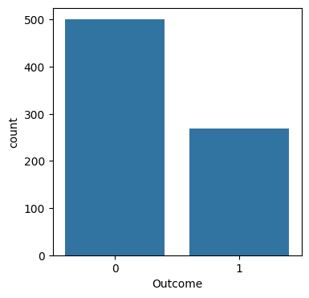
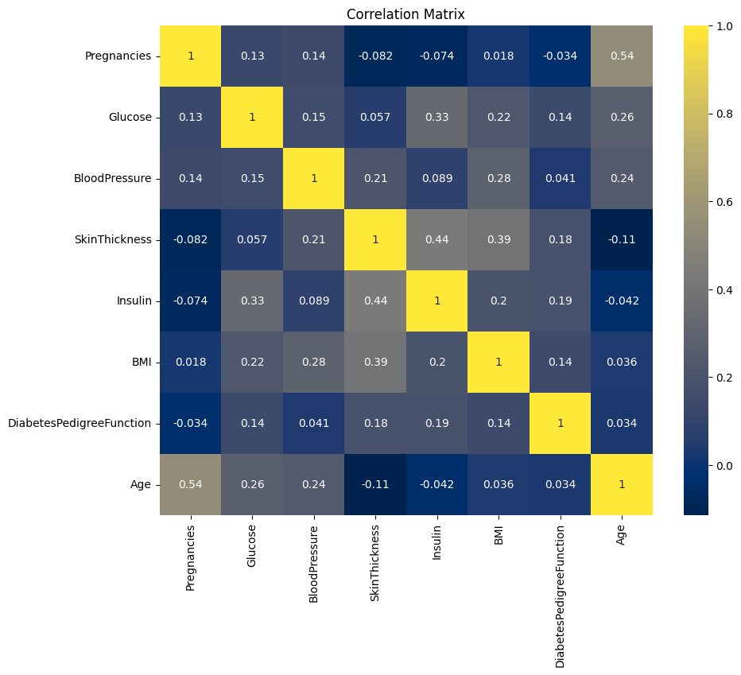
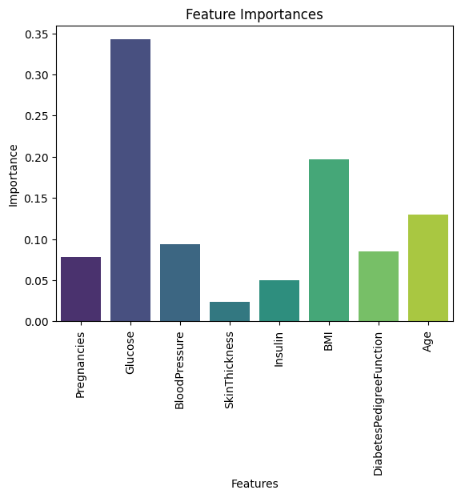
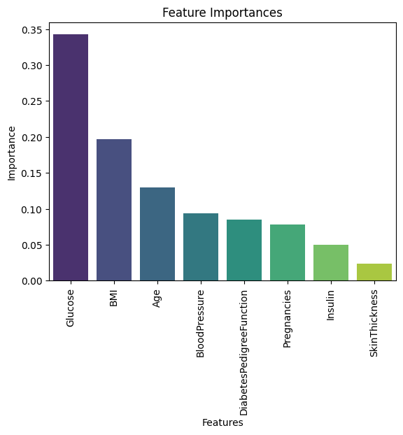
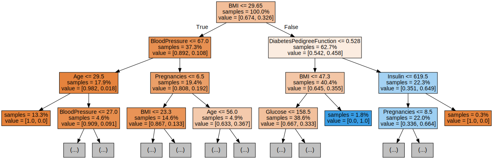
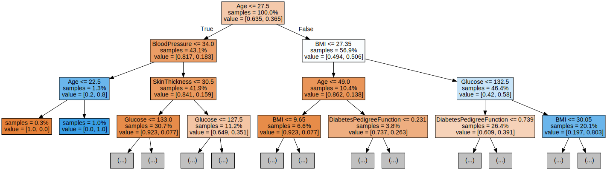
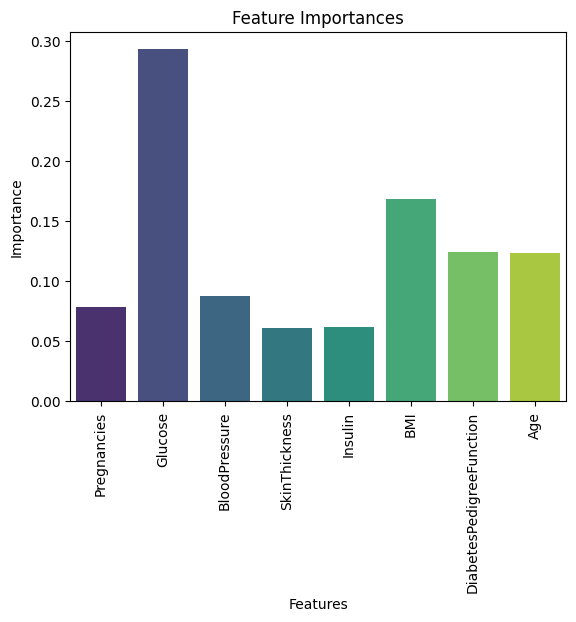
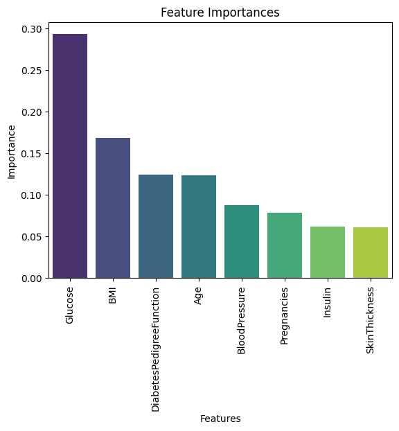
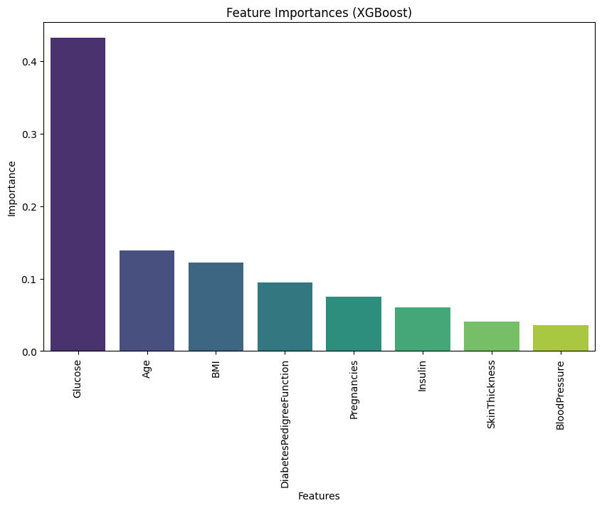

Please upload the .ipynb, .pdf to Github prior to the deadline. Please include your UNI as well.
Make sure to use the dataset that we provide in CourseWorks/Classroom.
There are a lot of applied questions based on the code results. Please make sure to answer them all. These are primarily to test your understanding of the results your code generate (similar to any Data Science/ML case study interviews).
The Diabetes Dataset comprises medical data from 768 female patients of Pima Indian heritage, including 8 health-related features and a binary target indicating the presence or absence of diabetes.
import warnings
warnings.filterwarnings("ignore")
import numpy as np
import pandas as pd
import matplotlib.pyplot as plt
import seaborn as sns
from sklearn.model_selection import train_test_split
from sklearn.preprocessing import StandardScaler, MinMaxScaler
from sklearn.preprocessing import OrdinalEncoderfrom sklearn.tree import DecisionTreeClassifier, plot_tree
from sklearn.metrics import accuracy_score
from sklearn.pipeline import make_pipeline, Pipeline, FeatureUnion1.1: Load the provided dataset
# url = 'https://raw.githubusercontent.com/Apurva3509/Applied-Machine-Learning/main/2/diabetes.csv?token=GHSAT0AAAAAACNAARHPWYJBTLOL4RDUZJJYZO2KQMQ'
# df1 = pd.read_csv(url)df1 = pd.read_csv('/content/diabetes.csv')df1| Pregnancies | Glucose | BloodPressure | SkinThickness | Insulin | BMI | DiabetesPedigreeFunction | Age | Outcome | |
|---|---|---|---|---|---|---|---|---|---|
| 0 | 6 | 148 | 72 | 35 | 0 | 33.6 | 0.627 | 50 | 1 |
| 1 | 1 | 85 | 66 | 29 | 0 | 26.6 | 0.351 | 31 | 0 |
| 2 | 8 | 183 | 64 | 0 | 0 | 23.3 | 0.672 | 32 | 1 |
| 3 | 1 | 89 | 66 | 23 | 94 | 28.1 | 0.167 | 21 | 0 |
| 4 | 0 | 137 | 40 | 35 | 168 | 43.1 | 2.288 | 33 | 1 |
| ... | ... | ... | ... | ... | ... | ... | ... | ... | ... |
| 763 | 10 | 101 | 76 | 48 | 180 | 32.9 | 0.171 | 63 | 0 |
| 764 | 2 | 122 | 70 | 27 | 0 | 36.8 | 0.340 | 27 | 0 |
| 765 | 5 | 121 | 72 | 23 | 112 | 26.2 | 0.245 | 30 | 0 |
| 766 | 1 | 126 | 60 | 0 | 0 | 30.1 | 0.349 | 47 | 1 |
| 767 | 1 | 93 | 70 | 31 | 0 | 30.4 | 0.315 | 23 | 0 |
768 rows × 9 columns
1.2: How many instances are there in the dataset for each class (diabetic and non-diabetic patients)? What does this tell you about the balance of the dataset?
df1['Outcome'].value_counts()0 500
1 268
Name: Outcome, dtype: int64## YOUR CODE HERE
fig, axes = plt.subplots(1, 1, figsize=(4, 4))
sns.countplot(x=df1.Outcome, data=df1)
plt.show()
1.3: Are there any missing values in the dataset? If so, how will you handle them?
## YOUR CODE HERE
missing_values = df1.isnull().sum()
print("Missing values in each column:")
print(missing_values)Missing values in each column:
Pregnancies 0
Glucose 0
BloodPressure 0
SkinThickness 0
Insulin 0
BMI 0
DiabetesPedigreeFunction 0
Age 0
Outcome 0
dtype: int64
1.4: Split the data into development and test datasets. Which splitting methodology did you choose and why?
**Hint: Based on the distribution of the data, try to use the best splitting strategy.
vars = ['Pregnancies', 'Glucose', 'BloodPressure', 'SkinThickness', 'Insulin', 'BMI', 'DiabetesPedigreeFunction', 'Age']
corr2 = df1[vars].corr()
plt.figure(figsize=(10, 8))
sns.heatmap(corr2, annot=True, cmap='cividis')
# sns.heatmap(corr2, annot=True, cmap='RdBu')
plt.title('Correlation Matrix')
plt.show()
df1| Pregnancies | Glucose | BloodPressure | SkinThickness | Insulin | BMI | DiabetesPedigreeFunction | Age | Outcome | |
|---|---|---|---|---|---|---|---|---|---|
| 0 | 6 | 148 | 72 | 35 | 0 | 33.6 | 0.627 | 50 | 1 |
| 1 | 1 | 85 | 66 | 29 | 0 | 26.6 | 0.351 | 31 | 0 |
| 2 | 8 | 183 | 64 | 0 | 0 | 23.3 | 0.672 | 32 | 1 |
| 3 | 1 | 89 | 66 | 23 | 94 | 28.1 | 0.167 | 21 | 0 |
| 4 | 0 | 137 | 40 | 35 | 168 | 43.1 | 2.288 | 33 | 1 |
| ... | ... | ... | ... | ... | ... | ... | ... | ... | ... |
| 763 | 10 | 101 | 76 | 48 | 180 | 32.9 | 0.171 | 63 | 0 |
| 764 | 2 | 122 | 70 | 27 | 0 | 36.8 | 0.340 | 27 | 0 |
| 765 | 5 | 121 | 72 | 23 | 112 | 26.2 | 0.245 | 30 | 0 |
| 766 | 1 | 126 | 60 | 0 | 0 | 30.1 | 0.349 | 47 | 1 |
| 767 | 1 | 93 | 70 | 31 | 0 | 30.4 | 0.315 | 23 | 0 |
768 rows × 9 columns
columns = ['Pregnancies', 'Glucose', 'BloodPressure', 'SkinThickness', 'Insulin', 'BMI', 'DiabetesPedigreeFunction', 'Age']
for column_name in columns:
counts = df1[column_name].value_counts()
# print(f"Unique values and their frequencies for column '{column_name}':")
# print(counts)
# print()## YOUR CODE HERE
df1_X = df1.drop(columns=['Outcome'])
df1_y = df1['Outcome']print('Shape of feature vectors: ', df1_X.shape)
print('Shape of target vector: ', df1_y.shape)Shape of feature vectors: (768, 8)
Shape of target vector: (768,)
df1_y_array = df1_y.to_numpy()
df1_y = df1_y_array.reshape(-1, 1)
print(df1_y.shape)(768, 1)
X_train, X_test, y_train, y_test = train_test_split(df1_X, df1_y, test_size=0.2, random_state=42, stratify=df1_y)
# X_train, X_val, y_train, y_val = train_test_split(X_dev, y_dev, test_size=0.25, random_state=42, stratify=y_dev)
print("Shape of X_train:", X_train.shape)
print("Shape of y_train:", y_train.shape)
# print("Shape of y_train:", X_val.shape)
# print("Shape of y_train:", y_val.shape)
print("Shape of X_test:", X_test.shape)
print("Shape of y_test:", y_test.shape)Shape of X_train: (614, 8)
Shape of y_train: (614, 1)
Shape of X_test: (154, 8)
Shape of y_test: (154, 1)
1.5: Build a decision tree classifier to predict the onset of diabetes. What criterion (e.g., Gini impurity, entropy) did you choose for splitting, and why?
I am using gini to split because I know that gini is a measure of absolute purity and splitting is made easy when directly compared with absolute values.
Also as per their formula, entropy has a log function which can slow the process if we dont keep a max depth for the tree.
pipe_gini = DecisionTreeClassifier(max_depth=10, criterion='gini')
pipe_gini.fit(X_train, y_train)
print("Gini to split")
print("Accuracy Score on Train set: ", pipe_gini.score(X_train, y_train))
print("Accuracy Score on Test set: ", pipe_gini.score(X_test, y_test))Gini to split
Accuracy Score on Train set: 0.9511400651465798
Accuracy Score on Test set: 0.7272727272727273
1.6: Evaluate your model using accuracy, precision, recall, and F1-score. What do these metrics reveal about your model's performance?
from sklearn.metrics import accuracy_score, precision_score, recall_score, f1_scorey_pred = pipe_gini.predict(X_test)
accuracy = accuracy_score(y_test, y_pred)
precision = precision_score(y_test, y_pred)
recall = recall_score(y_test, y_pred)
f1 = f1_score(y_test, y_pred)
print("Accuracy:", accuracy)
print("Precision:", precision)
print("Recall:", recall)
print("F1 score:", f1)Accuracy: 0.7272727272727273
Precision: 0.6428571428571429
Recall: 0.5
F1 score: 0.5625000000000001
1.8: List the top 3 most important features for this trained tree? How would you justify these features being the most important?
from sklearn.pipeline import *
from sklearn.feature_selection import mutual_info_classiffeatures = ['Pregnancies', 'Glucose', 'BloodPressure', 'SkinThickness', 'Insulin', 'BMI', 'DiabetesPedigreeFunction', 'Age']
feat_imp = pipe_gini.feature_importances_
print("Total features: ",len(features))
print("Weights for features: ", len(feat_imp))Total features: 8
Weights for features: 8
ax = sns.barplot(x=list(features), y=list(feat_imp), palette='viridis')
ax.set_xlabel('Features')
ax.set_ylabel('Importance')
ax.set_title('Feature Importances')
ax.tick_params(axis='x', rotation=90)
plt.show()
imp_df = pd.DataFrame({'Features': features, 'Weights': feat_imp})
imp_sorted = imp_df.sort_values(by = ['Weights'], ascending = False)
imp_sorted| Features | Weights | |
|---|---|---|
| 1 | Glucose | 0.342339 |
| 5 | BMI | 0.196474 |
| 7 | Age | 0.129601 |
| 2 | BloodPressure | 0.093884 |
| 6 | DiabetesPedigreeFunction | 0.085114 |
| 0 | Pregnancies | 0.078641 |
| 4 | Insulin | 0.050527 |
| 3 | SkinThickness | 0.023421 |
ax = sns.barplot(x='Features', y='Weights', data=imp_sorted, palette='viridis')
ax.set_xlabel('Features')
ax.set_ylabel('Importance')
ax.set_title('Feature Importances')
ax.tick_params(axis='x', rotation=90)
plt.show()
The top 3 features are:
2.1: Train a Random Forest model on the development dataset using RandomForestClassifier class in sklearn. Use the default parameters. Evaluate the performance of the model on test dataset. Does this perform better than Decision Tree on the test dataset
features = ['Pregnancies', 'Glucose', 'BloodPressure', 'SkinThickness', 'Insulin', 'BMI', 'DiabetesPedigreeFunction', 'Age']from sklearn.ensemble import RandomForestClassifier, RandomForestRegressor
from sklearn.model_selection import RandomizedSearchCV, GridSearchCV
from scipy.stats import randint
from sklearn.tree import export_graphviz
from IPython.display import Image
import graphviz## YOUR CODE HERE
rf_model = RandomForestClassifier()
rf_model.fit(X_train, y_train)
print(f"Random Forest accuracy score: ", rf_model.score(X_test, y_test))Random Forest accuracy score: 0.7402597402597403
# Displaying first 2 trees in the forest
for i in range(2):
tree = rf_model.estimators_[i]
dot_data = export_graphviz(tree,
feature_names=X_train.columns,
filled=True,
max_depth=3,
impurity=False,
proportion=True)
graph = graphviz.Source(dot_data)
display(graph)

feature_imp = pd.Series(rf_model.feature_importances_).sort_values(ascending = False)
feature_imp1 0.267179
5 0.152435
7 0.136758
6 0.123744
2 0.090866
0 0.086395
4 0.073021
3 0.069603
dtype: float642.2 Does all trees in the trained random forest model have pure leaves? How would you verify this?
## YOUR CODE HERE: I can check if the impurity is 0 for all decision tree and then if 0 then pure leaves
for i, tree in enumerate(rf_model.estimators_):
all_pure = all(impurity == 0 for impurity in tree.tree_.impurity)
if all_pure:
print(f"Tree {i + 1}: All leaves are pure")
else:
print(f"T {i + 1}: No pure leaves")T 1: No pure leaves
T 2: No pure leaves
T 3: No pure leaves
T 4: No pure leaves
T 5: No pure leaves
T 6: No pure leaves
T 7: No pure leaves
T 8: No pure leaves
T 9: No pure leaves
T 10: No pure leaves
T 11: No pure leaves
T 12: No pure leaves
T 13: No pure leaves
T 14: No pure leaves
T 15: No pure leaves
T 16: No pure leaves
T 17: No pure leaves
T 18: No pure leaves
T 19: No pure leaves
T 20: No pure leaves
T 21: No pure leaves
T 22: No pure leaves
T 23: No pure leaves
T 24: No pure leaves
T 25: No pure leaves
T 26: No pure leaves
T 27: No pure leaves
T 28: No pure leaves
T 29: No pure leaves
T 30: No pure leaves
T 31: No pure leaves
T 32: No pure leaves
T 33: No pure leaves
T 34: No pure leaves
T 35: No pure leaves
T 36: No pure leaves
T 37: No pure leaves
T 38: No pure leaves
T 39: No pure leaves
T 40: No pure leaves
T 41: No pure leaves
T 42: No pure leaves
T 43: No pure leaves
T 44: No pure leaves
T 45: No pure leaves
T 46: No pure leaves
T 47: No pure leaves
T 48: No pure leaves
T 49: No pure leaves
T 50: No pure leaves
T 51: No pure leaves
T 52: No pure leaves
T 53: No pure leaves
T 54: No pure leaves
T 55: No pure leaves
T 56: No pure leaves
T 57: No pure leaves
T 58: No pure leaves
T 59: No pure leaves
T 60: No pure leaves
T 61: No pure leaves
T 62: No pure leaves
T 63: No pure leaves
T 64: No pure leaves
T 65: No pure leaves
T 66: No pure leaves
T 67: No pure leaves
T 68: No pure leaves
T 69: No pure leaves
T 70: No pure leaves
T 71: No pure leaves
T 72: No pure leaves
T 73: No pure leaves
T 74: No pure leaves
T 75: No pure leaves
T 76: No pure leaves
T 77: No pure leaves
T 78: No pure leaves
T 79: No pure leaves
T 80: No pure leaves
T 81: No pure leaves
T 82: No pure leaves
T 83: No pure leaves
T 84: No pure leaves
T 85: No pure leaves
T 86: No pure leaves
T 87: No pure leaves
T 88: No pure leaves
T 89: No pure leaves
T 90: No pure leaves
T 91: No pure leaves
T 92: No pure leaves
T 93: No pure leaves
T 94: No pure leaves
T 95: No pure leaves
T 96: No pure leaves
T 97: No pure leaves
T 98: No pure leaves
T 99: No pure leaves
T 100: No pure leaves
for i, tree in enumerate(rf_model.estimators_):
leaf_indices = tree.apply(X_train)
leaf_indices = np.unique(leaf_indices) # Ensure unique leaf indices
all_pure = all(tree.tree_.impurity[node] == 0 for node in leaf_indices)
if all_pure:
print(f"Tree {i + 1}: Last leaves pure")
else:
print(f"Tree {i + 1}: last leaves impure")Tree 1: Last leaves pure
Tree 2: Last leaves pure
Tree 3: Last leaves pure
Tree 4: Last leaves pure
Tree 5: Last leaves pure
Tree 6: Last leaves pure
Tree 7: Last leaves pure
Tree 8: Last leaves pure
Tree 9: Last leaves pure
Tree 10: Last leaves pure
Tree 11: Last leaves pure
Tree 12: Last leaves pure
Tree 13: Last leaves pure
Tree 14: Last leaves pure
Tree 15: Last leaves pure
Tree 16: Last leaves pure
Tree 17: Last leaves pure
Tree 18: Last leaves pure
Tree 19: Last leaves pure
Tree 20: Last leaves pure
Tree 21: Last leaves pure
Tree 22: Last leaves pure
Tree 23: Last leaves pure
Tree 24: Last leaves pure
Tree 25: Last leaves pure
Tree 26: Last leaves pure
Tree 27: Last leaves pure
Tree 28: Last leaves pure
Tree 29: Last leaves pure
Tree 30: Last leaves pure
Tree 31: Last leaves pure
Tree 32: Last leaves pure
Tree 33: Last leaves pure
Tree 34: Last leaves pure
Tree 35: Last leaves pure
Tree 36: Last leaves pure
Tree 37: Last leaves pure
Tree 38: Last leaves pure
Tree 39: Last leaves pure
Tree 40: Last leaves pure
Tree 41: Last leaves pure
Tree 42: Last leaves pure
Tree 43: Last leaves pure
Tree 44: Last leaves pure
Tree 45: Last leaves pure
Tree 46: Last leaves pure
Tree 47: Last leaves pure
Tree 48: Last leaves pure
Tree 49: Last leaves pure
Tree 50: Last leaves pure
Tree 51: Last leaves pure
Tree 52: Last leaves pure
Tree 53: Last leaves pure
Tree 54: Last leaves pure
Tree 55: Last leaves pure
Tree 56: Last leaves pure
Tree 57: Last leaves pure
Tree 58: Last leaves pure
Tree 59: Last leaves pure
Tree 60: Last leaves pure
Tree 61: Last leaves pure
Tree 62: Last leaves pure
Tree 63: Last leaves pure
Tree 64: Last leaves pure
Tree 65: Last leaves pure
Tree 66: Last leaves pure
Tree 67: Last leaves pure
Tree 68: Last leaves pure
Tree 69: Last leaves pure
Tree 70: Last leaves pure
Tree 71: Last leaves pure
Tree 72: Last leaves pure
Tree 73: Last leaves pure
Tree 74: Last leaves pure
Tree 75: Last leaves pure
Tree 76: Last leaves pure
Tree 77: Last leaves pure
Tree 78: Last leaves pure
Tree 79: Last leaves pure
Tree 80: Last leaves pure
Tree 81: Last leaves pure
Tree 82: Last leaves pure
Tree 83: Last leaves pure
Tree 84: Last leaves pure
Tree 85: Last leaves pure
Tree 86: Last leaves pure
Tree 87: Last leaves pure
Tree 88: Last leaves pure
Tree 89: Last leaves pure
Tree 90: Last leaves pure
Tree 91: Last leaves pure
Tree 92: Last leaves pure
Tree 93: Last leaves pure
Tree 94: Last leaves pure
Tree 95: Last leaves pure
Tree 96: Last leaves pure
Tree 97: Last leaves pure
Tree 98: Last leaves pure
Tree 99: Last leaves pure
Tree 100: Last leaves pure
2.3: Assume you want to improve the performance of this model. Also, assume that you had to pick two hyperparameters that you could tune to improve its performance. Which hyperparameters would you choose and why?
2.4: Now, assume you had to choose up to 5 different values (each) for these two hyperparameters. How would you choose these values that could potentially give you a performance lift?
While selecting values for hyperparameters (n_estimators, max_depth) for a RF model, it's essential to consider a range of values that span different levels of model complexity and then we can do a RandomizedSearch or GridSearchCV.
1. n_estimators:
2. max_features:
- Here's a selection of 5 values for each hyperparameter that I chose:
n_estimators: [50, 100, 200, 300, 1000]
max_depth: [None, 10, 20, 30, 50]## YOUR SOLUTION HERE: given in markdown above2.5: Perform model selection using the chosen values for the hyperparameters. Use cross-validation for finding the optimal hyperparameters. Report on the optimal hyperparameters. Estimate the performance of the optimal model (model trained with optimal hyperparameters) on test dataset? Has the performance improved over your plain-vanilla random forest model trained in Q2.1?
## YOUR CODE HERE
param_grid = {
'n_estimators': [50, 100, 200, 300, 400], # trees in the forest
'max_features': [2, 3, 5, 7, 8]
}
rf_model2 = RandomForestClassifier(oob_score=True, random_state=42, warm_start=True)
grid_search = GridSearchCV(estimator=rf_model2, param_grid=param_grid, cv=5, return_train_score=True, n_jobs=-1)
grid_search.fit(X_train, y_train)
print("Best Hyperparameters:", grid_search.best_params_)
best_rf_model = grid_search.best_estimator_
accuracy = best_rf_model.score(X_test, y_test)
print("Accuracy on Test Set:", accuracy)Best Hyperparameters: {'max_features': 3, 'n_estimators': 100}
Accuracy on Test Set: 0.7597402597402597
For me the model performance did improve a bit. Looks like the default parameters are the close to the best hyperparamters
from sklearn.model_selection import cross_val_score
cv_scores = cross_val_score(best_rf_model, X_train, y_train, cv=5)
print("Cross-validation scores:", cv_scores)
mean_cv_score = np.mean(cv_scores)
print("Mean Cross-validation score:", mean_cv_score)Cross-validation scores: [0.76422764 0.81300813 0.72357724 0.7804878 0.80327869]
Mean Cross-validation score: 0.776915900306544
2.6: Can you find the top 3 most important features from the model trained in Q2.5? How do these features compare to the important features that you found from Q1.8? If they differ, which feature set makes more sense?
feat_imp = best_rf_model.feature_importances_
print("Total features: ",len(features))
print("Weights for features: ", len(feat_imp))Total features: 8
Weights for features: 8
ax = sns.barplot(x=list(features), y=list(feat_imp), palette='viridis')
ax.set_xlabel('Features')
ax.set_ylabel('Importance')
ax.set_title('Feature Importances')
ax.tick_params(axis='x', rotation=90)
plt.show()
## YOUR CODE HERE
imp_df2 = pd.DataFrame({'Features': features, 'Weights': feat_imp})
imp_sorted2 = imp_df2.sort_values(by = ['Weights'], ascending = False)
imp_sorted2| Features | Weights | |
|---|---|---|
| 1 | Glucose | 0.292768 |
| 5 | BMI | 0.168607 |
| 6 | DiabetesPedigreeFunction | 0.124303 |
| 7 | Age | 0.123728 |
| 2 | BloodPressure | 0.088036 |
| 0 | Pregnancies | 0.078773 |
| 4 | Insulin | 0.062336 |
| 3 | SkinThickness | 0.061447 |
ax = sns.barplot(x='Features', y='Weights', data=imp_sorted2, palette='viridis')
ax.set_xlabel('Features')
ax.set_ylabel('Importance')
ax.set_title('Feature Importances')
ax.tick_params(axis='x', rotation=90)
plt.show()
3.1: Choose three hyperparameters to tune HistGradientBoostingClassifier on the development dataset using 5-fold cross validation. For each hyperparmeter, give it 3 potential values. Report on the time taken to do model selection for the model. Also, report the performance of the test dataset from the optimal models.
import timefrom sklearn.ensemble import HistGradientBoostingClassifier
from sklearn.pipeline import make_pipeline
learning_rate = [0.01, 0.1, 0.2]
max_iter = [50, 100, 200]
max_depth = [2, 3, 6]
hgb = HistGradientBoostingClassifier(random_state=42)
pipe = make_pipeline(GridSearchCV( hgb, param_grid={ 'learning_rate': learning_rate,
'max_iter': max_iter, 'max_depth': max_depth}, cv=5, n_jobs=-1 ))
start_time = time.time()
pipe.fit(X_train, y_train)
end_time = time.time()
print("Time taken for model selection: {:.2f} seconds".format(end_time - start_time))
grid_search_results = pipe.named_steps['gridsearchcv']
best_params = grid_search_results.best_params_
best_score = grid_search_results.best_score_
test_score = pipe.score(X_test, y_test)
print("Best train score:", best_score)
print("Best parameters:", best_params)
print("Test score:", test_score)Time taken for model selection: 25.29 seconds
Best train score: 0.7671731307477009
Best parameters: {'learning_rate': 0.01, 'max_depth': 2, 'max_iter': 200}
Test score: 0.7207792207792207
3.2: Train an XGBoost model by tuning 3 hyperparameters using 10 fold cross-validation. Compare the performance of the trained XGBoost model on the test dataset against the performances obtained from 3.1
## YOUR CODE HERE
import xgboost as xgb
params = {
'learning_rate': [0.01, 0.1, 0.2],
'n_estimators': [50, 100, 200],
'max_depth': [2, 3, 6]
}
xgb_model = xgb.XGBClassifier(random_state=42)
pipe_xgb = make_pipeline(GridSearchCV(
xgb_model,
param_grid=params,
cv=10,
n_jobs=-1
))
start_time = time.time()
pipe_xgb.fit(X_train, y_train)
end_time = time.time()
print("Time taken for model selection: {:.2f} seconds".format(end_time - start_time))
grid_search_results_xgb = pipe_xgb.named_steps['gridsearchcv']
best_params_xgb = grid_search_results_xgb.best_params_
best_score_xgb = grid_search_results_xgb.best_score_
y_pred_xgb = pipe_xgb.predict(X_test)
test_score_xgb = accuracy_score(y_test, y_pred_xgb)
print("Best train score:", best_score_xgb)
print("Best parameters:", best_params_xgb)
print("Test score:", test_score_xgb)Time taken for model selection: 23.64 seconds
Best train score: 0.7669751454257007
Best parameters: {'learning_rate': 0.01, 'max_depth': 3, 'n_estimators': 200}
Test score: 0.7467532467532467
3.3: Can you list the top 3 features from the trained XGBoost model? How do they differ from the features found from Random Forest and Decision Tree? Which one would you trust the most?
## YOUR CODE HERE
xgb_model = pipe_xgb.named_steps['gridsearchcv'].best_estimator_
feat_imp = xgb_model.feature_importances_
# Create a DataFrame to store feature names and their importances
imp_df = pd.DataFrame({'Features': features, 'Weights': feat_imp})
# Sort the DataFrame based on feature importances
imp_sorted = imp_df.sort_values(by='Weights', ascending=False)
# Plot the sorted feature importances
plt.figure(figsize=(10, 6))
ax = sns.barplot(x='Features', y='Weights', data=imp_sorted, palette='viridis')
ax.set_xlabel('Features')
ax.set_ylabel('Importance')
ax.set_title('Feature Importances (XGBoost)')
ax.tick_params(axis='x', rotation=90)
plt.show()
top_feat_indices = feat_imp.argsort()[-3:][::-1]
top_features = [features[i] for i in top_feat_indices]
print("Top 3 features from XGBoost model:", top_features)
Top 3 features from XGBoost model: ['Glucose', 'Age', 'BMI']
3.4 Can you choose the top 7 features (as given by feature importances from XGBoost) and repeat Q3.2? Does this model perform better than the one trained in Q3.2? Why or why not is the performance better?
## YOUR CODE HERE
top_feat_indices = feat_imp.argsort()[-7:][::-1]
top_features = [features[i] for i in top_feat_indices]
X_train_top = X_train[top_features]
X_test_top = X_test[top_features]
xgb_model_top = xgb.XGBClassifier(random_state=42)
pipe_xgb_top = make_pipeline(GridSearchCV(
xgb_model_top,
param_grid=params,
cv=10,
n_jobs=-1
))
start_time = time.time()
pipe_xgb_top.fit(X_train_top, y_train)
end_time = time.time()
print("Time taken for model selection with top 7 features: {:.2f} seconds".format(end_time - start_time))
test_score_xgb_top = pipe_xgb_top.score(X_test_top, y_test)
print("Test score with top 7 features:", test_score_xgb_top)Time taken for model selection with top 7 features: 19.38 seconds
Test score with top 7 features: 0.7402597402597403
from google.colab import drive
drive.mount('/content/drive')
import os
os.chdir('/content/drive/MyDrive/2')Drive already mounted at /content/drive; to attempt to forcibly remount, call drive.mount("/content/drive", force_remount=True).
import nbconvert